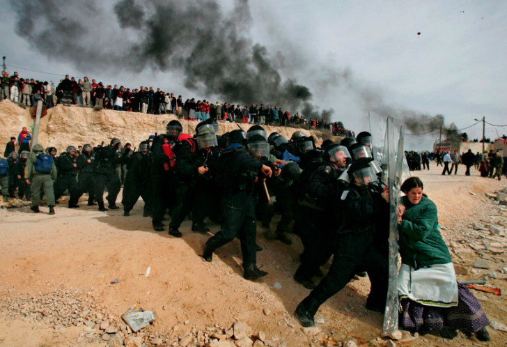

Onlarca polisin tek başına yüklendiği bu kadın aslında Amona West Bank’teki binlerce Yahudi yerleşimciden biri. İsrail hükümeti yeni yerleşimcileri kendi istediği yerlere gönderebilmek için elindeki bütün gücü fotoğraftaki kadında olduğu gibi kullanıyor. Yerinden yurdundan olan Filistinli kardeşlerini en iyi bu kadın anlıyordur herhalde. Lone Jewish Woman adlı fotoğraf 2006 yılında Oded Balilty’e Pulitzer Ödülü’nü kazandırdı.
